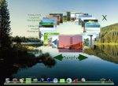
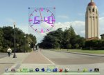

Willkommen zum Looking Glass Incubator Project!
Das Projekt Looking Glass incubator stellt für die Mitglieder eine Möglichkeit dar, neue LG3D Anwendungen zu erstellen und diese mit anderen zu teilen.
Nutzen Sie Ihre Vorstellungskraft über die Möglichkeiten, die uns 3D Anwendungen bieten. Hier können Sie unsere Musikverwaltung als ein Beispiel ansehen (Dieses Demo zeigt eine aktive Version).
Wir laden Sie ein neue 3D Programme zu entwickeln und diese dann hier bei uns zu verwalten und hier abzulegen. Bitte schauen Sie dazu auf: Unterstützen des Project Looking Glass Hier können Sie nachlesen wie Sie uns helfen können. Bitte auch auf der Seite JavaDesktop Community Governance Guidelines für allgemeine Richtlinien zur Teilnahme an JavaDesktop community Projecten nachlesen, wie z.B. dem Project Looking Glass.
Um Zugang zum Entwicklerbereich zu erhalten, schicken Sie uns die unterschriebene Datei
JCA als Mail.
Bitte wählen sie einen Paketnamen aus, welcher keinen Konflikt mit anderen Benutzern dieses
Projektbereiches auslöst und bitte fragen sie um die Erlaubnis des Paketinhabers,
bevor sie irgendwelche Änderungen daran vornehmen.
Als eigenständiges Incubator Projekt kann es als eigenes Projekt auf java.net geführt werden.
|  |  | |||
| BgManager | Zoetrope | Clock | Ls3D |
{kind=link}
{kind=link}
{kind=link}
{kind=link}
{kind=link}